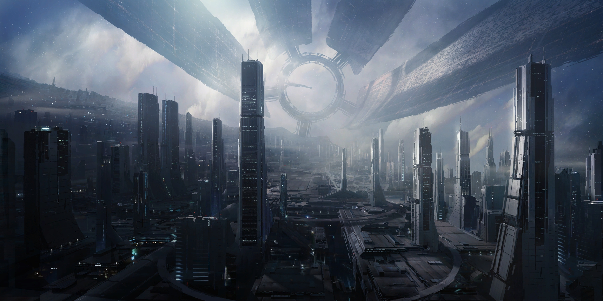

Supposedly constructed by the long-extinct Protheans , this colossal deep-space station serves as the capital of the Citadel Council. Gravity is simulated through rotation, and is a comfortable 1.02 standard G's on the Wards and a light 0.3 standard G's on the Presidium Ring.
